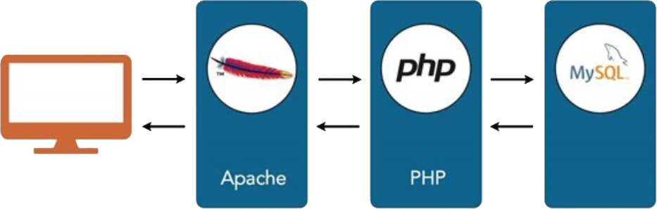

UT 5. Acceso a Base de Datos¶

En esta unidad aprenderemos a acceder a datos que se encuentran en un servidor; recuperando, editando y creando estos datos a través de una base de datos.
A través de las diferentes capas o niveles, de las cuales dos de ellas ya conocemos (Apache, PHP) y MySQL, la que estudiaremos en este tema.
Duración estimada: 12 sesiones.
| Resultados de aprendizaje | Criterios de evaluación | RA6. Desarrolla aplicaciones de acceso a almacenes de datos, aplicando medidas para mantener la seguridad y la integridad de la información. | a) Se han analizado las tecnologías que permiten el acceso mediante programación a la información disponible en almacenes de datos. |
|---|---|
| b) Se han creado aplicaciones que establezcan conexiones con bases de datos. | c) Se ha recuperado información almacenada en bases de datos. | d) Se ha publicado en aplicaciones web la información recuperada. | e) Se han utilizado conjuntos de datos para almacenar la información. | f) Se han creado aplicaciones web que permiten la actualización y la eliminación de información disponible en una base de datos. | g) Se han utilizado transacciones para mantener la consistencia de la información. |